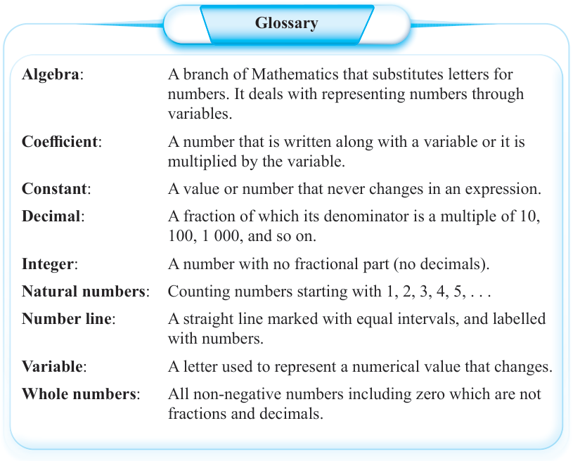

Glossary

Algebra:
A branch of Mathematics that substitutes letters for numbers. It deals with representing numbers through variables.
Coefficient:
A number that is written along with a variable or it is multiplied by the variable.
Constant:
A value or number that never changes in an expression.
Decimal:
A fraction of which its denominator is a multiple of 10, 100, 1 000, and so on.
Integer:
A number with no fractional part (no decimals).
Natural numbers:
Counting numbers starting with 1, 2, 3, 4, 5, . . .
Number line:
A straight line marked with equal intervals, and labelled with numbers.
Variable:
A letter used to represent a numerical value that changes.
Whole numbers:
All non-negative numbers including zero which are not fractions and decimals.